Многогранная информация о настоящем и будущем человечества, о скрытых страницах истории нашей и предыдущих цивилизаций, а также материалы, собранные в интересных статьях по саморазвитию, которые помогут понять себя, устройство мира, пути развития общества и необходимость объединения всех людей на планете.
Опыт прошлых лет говорит всем нам о том, что в моменты тяжелых климатических испытаний, которые обрушиваются на отдельные регионы нашей планеты, необходимо своевременное информирование людей о надвигающихся катаклизмах. Ресурсы, направленные на поддержку беженцев-мигрантов, поможет тысячам и миллионам людей избежать неминуемой гибели. Только объединяясь на основе дружбы и взаимопомощи у человечества есть шанс на жизнь!
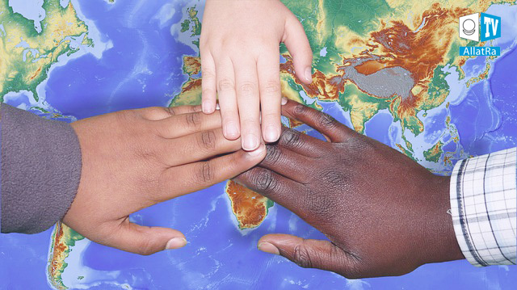Сегодня предотвратить глобальные климатические изменения люди уже не могут,но все должны быть осведомлены о грядущих проблемах.
Каждому из нас, кто готов протянуть руку помощи человеку, независимо от места его проживания, надлежит активно включаться в процесс информирования людей, чтобы внести свой максимальный вклад в отстаивание жизни, мира и свободы. Объединив наши усилия, необходимо проинформировать и подготовить как можно большее количество населения планеты к экологическим, климатическим, природным изменениям, а также помочь справиться с психологическими и глобальными потрясениями. Только отказавшись от всех своих эгоистических желаний и предрассудков и научившись любить и помогать друг другу, люди многократно увеличат свои возможности для совместного спасения многих жизней. Надо исключить прежде всего из своих мыслей все, что нас разделяет. А то, что объединяет, направлено на созидание, духовно-нравственное развитие и воспитание Человека надо совершенствовать и поддерживать в каждом! Духовно-нравственный вектор развития каждого человека спасет тысячи жизней, тысячи – миллионы, а миллионы – миллиарды жизней! Наша планета и люди смогут жить в единстве и любви!
 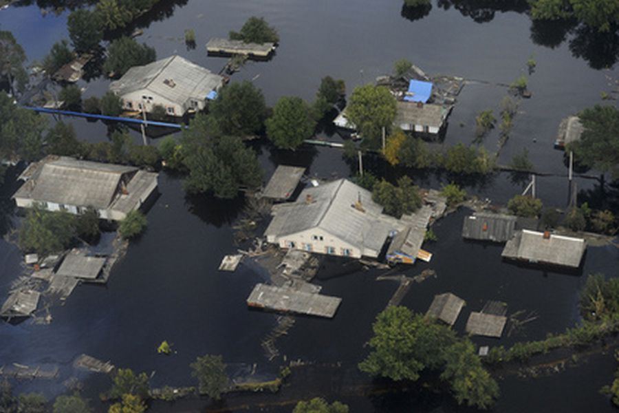
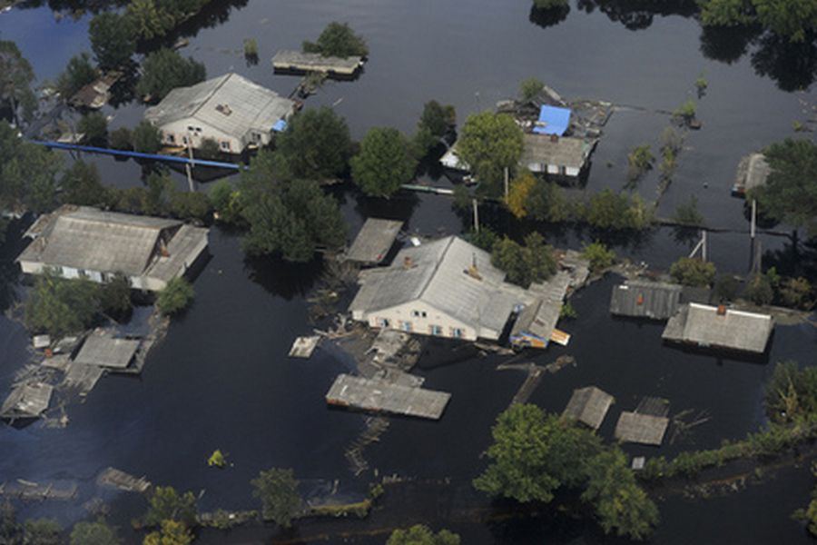
 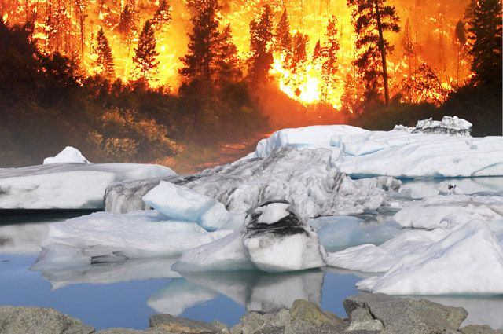
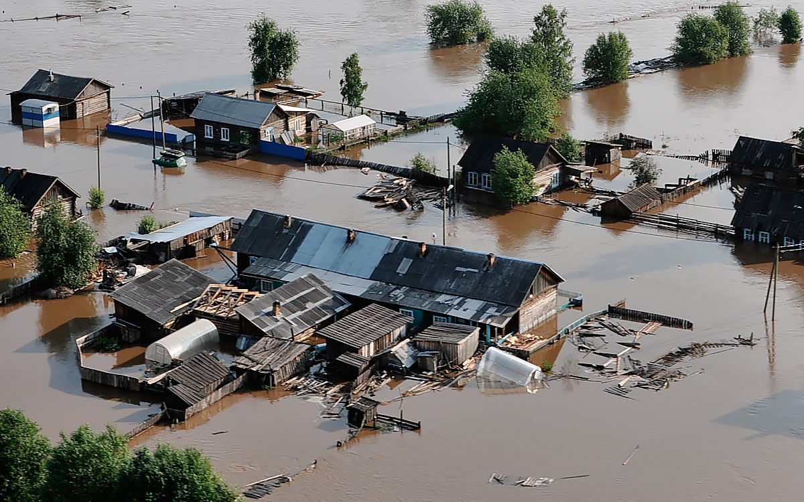
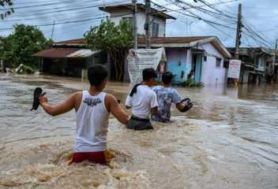
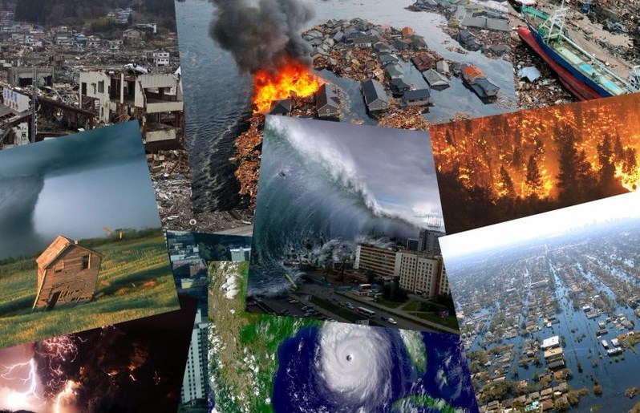
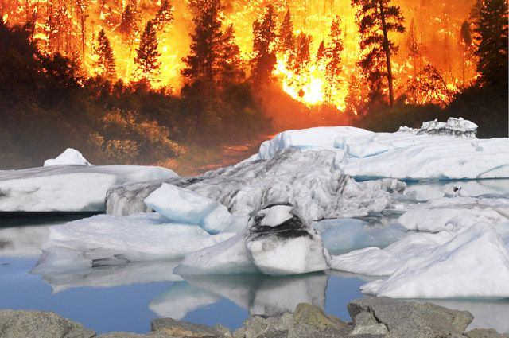
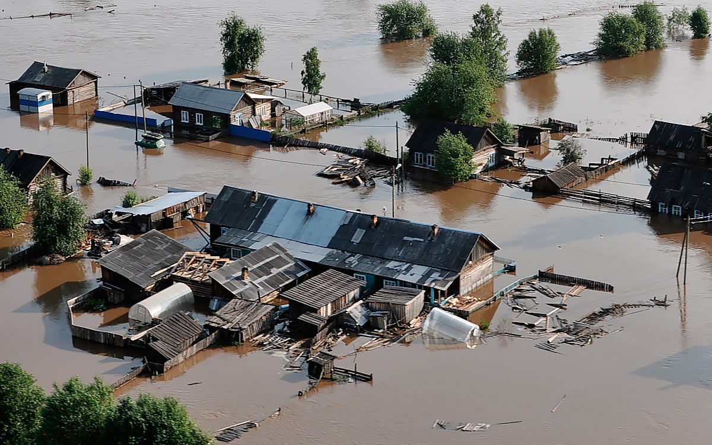
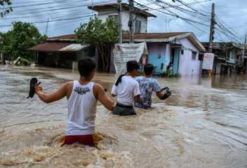
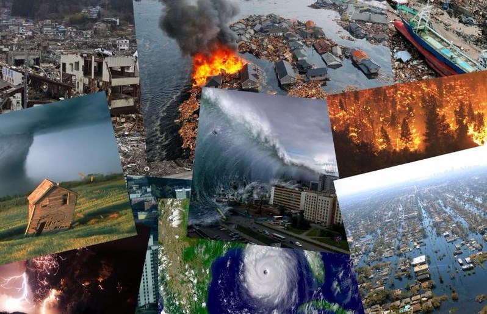
МЕЖДУНАРОДНЫЙ СОЦИАЛЬНЫЙ ПРОЕКТ «НЕТ НАСИЛИЮ В СЕМЬЕ И ОБЩЕСТВЕ»
Проект создан по инициативе международной общественности и реализуется волонтёрами Международного общественного движения «АЛЛАТРА» из разных стран мира.
В XXI веке проблема насилия в семье и обществе остаётся актуальной для любого уголка нашей планеты. Современный потребительский формат не только не решает эту проблему, но и усугубляет её. Но несмотря на это, люди во всём мире хотят жить в атмосфере дружбы, уважения и взаимопонимания.
Чтобы создать условия для перехода общества к созидательному формату, основанному на общечеловеческих духовно-нравственных ценностях, необходимо поднимать и открыто говорить о проблемах насилия в семьях и в обществе, о нарушениях прав человека, а также информировать о позитивном опыте выхода людей из сложных ситуаций. В рамках проекта создаются и выпускаются видео с мнением международной общественности, интервью специалистов разных сфер деятельности, проводятся соцопросы во многих странах, организуются международные встречи и онлайн конференции.
Всё это способствует совместному поиску решений обозначенных проблем, взаимодействию, информационной поддержке и обмену позитивным опытом выхода из сложившихся ситуаций, а также создания здорового психологического микроклимата в разных социальных коллективах, атмосферы дружбы, взаимопонимания и уважения друг к другу, понимания, что все человечество – одна семья.
Основная задача
Основная задача – проанализировать современные особенности духовного развития, степень осознанности в понимании главных элементов ценностного контекста религиозного мировоззрения в мировом сообществе. Выявить единое зерно духовных знаний на базе общих исконных духовных зёрен мировых религий, течений и направлений; а также схемы работы сознания, его мозаичный и амбивалентный характер (двойственный, содержащий в себе противоречия), особенности обскурантизма («затемнения», мракобесия, вражды) сознания, предпочтительные алгоритмы реакций на привнесение им специфических изменений, связанных с вероучительными принципами в различных религиях; возможности и варианты в нивелировании проявлений духовно-нравственного кризиса в условиях глобализации. Показать, каковы особенности духа единения и противоречий сознания в духовном наследии человеческой цивилизации. Найти общие социальные и духовно-нравственные факторы консолидации мирового сообщества на современном этапе.